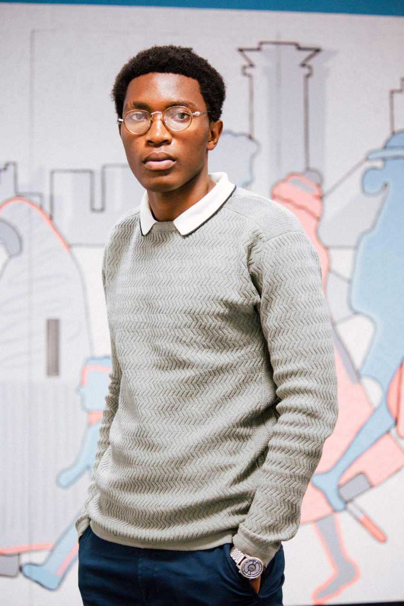

About
I study Computer Science and Economics at Swarthmore College and graduate in May 2027.
I work on backend services and network systems. I’m looking for new-grad software engineering roles in backend, infrastructure, and networking.
I also design products: design portfolio ↗

Experience
-
Network Research Assistant
Jun – Aug 2026Swarthmore College, Office of Undergraduate Research
Built a three-machine network-emulation testbed. The work became a CoNEXT 2026 poster paper.
-
Software Engineering Intern
Dec 2025 – Feb 2026Kinertia, via Parker Dewey · remote
Shipped XP awards and the achievements system in a FastAPI backend.
-
Software Engineering Fellow
Jun – Aug 2025Center for Innovation and Leadership, Swarthmore College
Built a real-time chat on Socket.io, PostgreSQL, and Redis, and an LLM customer-service assistant.
-
Teaching Assistant, CS 35
Spring 2025Department of Computer Science, Swarthmore College
Supported 70 students in Data Structures and Algorithms (C++).
-
Full-Stack Developer
2024 – 2025Swarthmore College Computer Society
Built an academic scheduling tool with iCalendar export.
Projects
-
Internet Quality Thresholds
featuredHow much packet delay does it take to stall a live stream?
-
Roommate-Match
Stable roommate matching, checked against a brute-force oracle.
-
Kinertia achievements
XP and achievements for a team-built productivity app.
-
Trace
in developmentInterview practice on a real codebase, in your own terminal.
Research
-
Poster: Testing Internet Quality Thresholds Through Application Measurements
Mathews Agani and Ranysha Ware · ACM CoNEXT Companion ’26, Utrecht
Accepted poster paper, to appear
Education
-
Swarthmore College
May 2027B.A. Computer Science and B.A. Economics
Computer Networks · Computer Systems · Software Engineering · Algorithm Design · Data Structures and Algorithms · Artificial Intelligence · Linear Algebra
Skills
- Networking & systems
- C, Linux, Netfilter / NFQUEUE, TCP/UDP sockets, pthreads, Wireshark, GDB
- Backend
- Python, FastAPI, Node.js / Express, PostgreSQL, SQLAlchemy, Redis, Socket.io
- Testing & tooling
- Jest, differential testing, Docker, Git, Snakemake, Bash
- Web
- TypeScript, JavaScript, React, HTML, CSS